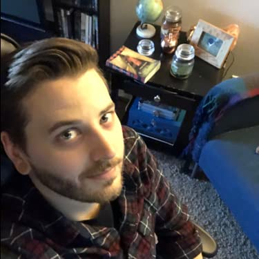

Joshua Holland
Aspiring software developer
" alt="Josh's head shot">My name is Josh Holland. I am a computer aided design drafter for an engineering firm in Tualatin Oregon. During my free time, I am teaching myself computer programming and I am very exited about my future as a software developer!
Although I am new to computer programming, I feel that my 3 years of Mechanical design experience in the circuit board industry have prepared me for this journey. As a designer, I am practicing critical thinking and creative problem solving skills every single day. From what I hear, developers don't just need to write code, they need to be problem solvers above anything else.
Feel free to explore my website and don't hesitate to contact me if you wish to speak with me regarding a job opportunity.
Thank you.